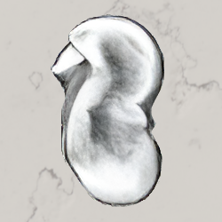
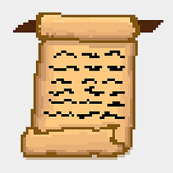

Linnea Isaac
Hi, I'm Linnea! I am a nerd for:
- people history
- language history
- natural history (critters & cells)
and last but not least:
- future history (tech and speculative fiction)
I like to write prose and poetry, hike and walk outside, play board games, and make games. I work tirelessly to master the flat-footed squat. I also speak some Japanese.
I frequently collaborate with my wife, the fabulous Theia Vogel. Here are some of the things we've made together:
Projects
Sortes Alearum
 A webpage simulating an ancient Greek dice-oracle: sort of like an ancient fortune-cookie. Get the oracle's divine advice straight from inscriptions found at historical sites in modern Turkey.
The Sacred Text
 A short myth-making game for GMTK Jam 2019 about the process of redaction that formed the great religious texts and canons. As a would-be god, choose your one true message, and see where it ends up.